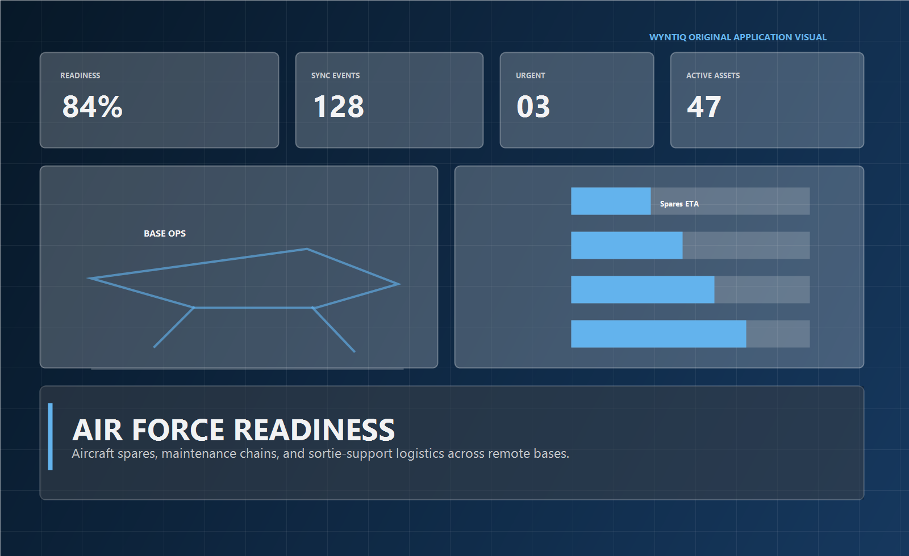
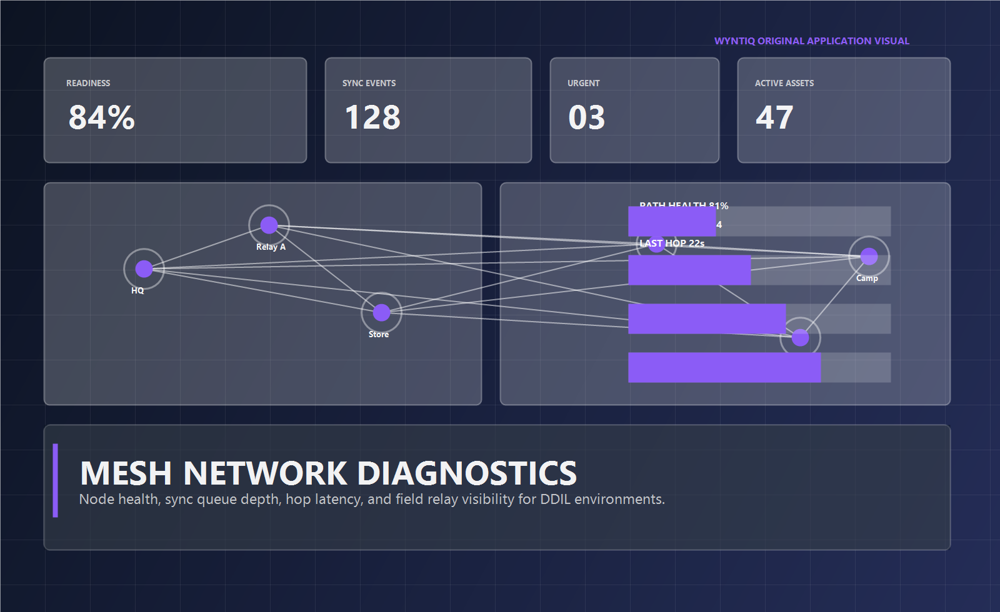

WYNTIQ gives maintenance teams, approving officers, and logistics sections a local-first chain for aircraft spares, support equipment, and readiness tracking across disconnected bases.

When a base needs a critical part, delays come from missing information, not only missing stock. WYNTIQ turns that invisible chain into a visible one.
Connect item demand to aircraft tail, maintenance task, urgency, and intended return-to-service path.
See whether a required item exists at another station before the chain burns time rediscovering the answer.
Translate spares flow, maintenance state, and issue completion into actual operational picture for decision-makers.
Critical part raised, approval complete, stock not local, cross-base source found, issue closed.
Stable panels keep the page dense and professional while preserving responsiveness on smaller viewports.
Remote or degraded bases keep recording and later synchronize instead of reverting operational truth to paper.

The public app should make the product understandable in minutes. Paid deployment should make it operational in the real chain.